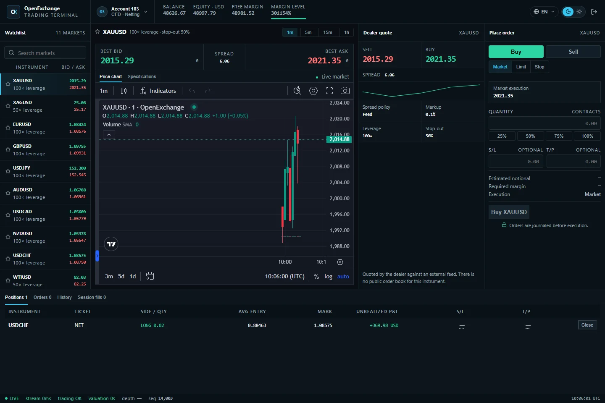
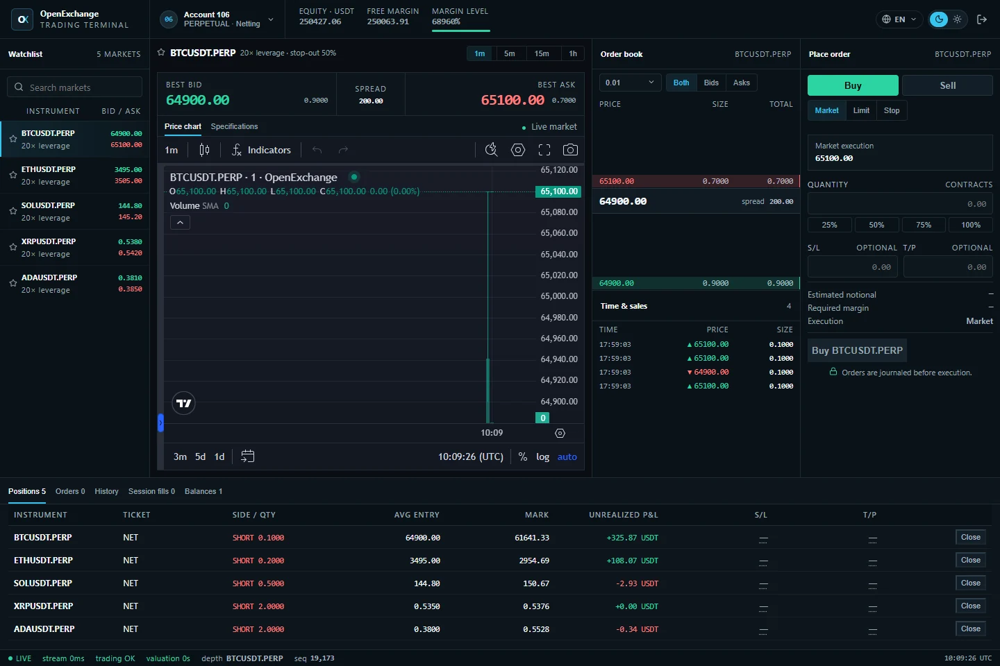
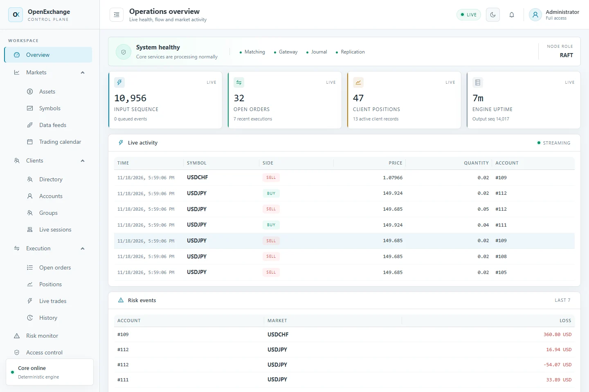

Three product types
Spot and perpetual orders match by price and time. CFDs execute against dealer quotes. The core also handles settlement, margin, funding and liquidation where applicable.
A trading exchange for spot, CFDs and perpetuals.
OpenExchange pairs a deterministic Go execution engine with a React trader terminal and admin console. Every order, quote and administrative change passes through the same ordered event path, so the exchange can rebuild its state from a snapshot and the committed journal.

Solo Developer
I designed and built the trading engine, Trader Terminal, and Admin Console. I used a Disruptor-style event pipeline for high-throughput order processing and a deterministic engine that can rebuild its state from a snapshot and journal replay. The full stack can run on a single server to keep deployment costs down.
Spot and perpetual orders match by price and time. CFDs execute against dealer quotes. The core also handles settlement, margin, funding and liquidation where applicable.
A single-threaded engine applies committed events using fixed-point arithmetic. Loading a snapshot and replaying the remaining journal reconstructs the trading state.
The same server runs as a single node or as a Raft cluster. Optional non-voting access nodes serve live reads at the edge and forward writes to the leader.
The Go exchange server commits inputs before executing them. The output stream then updates both the live interfaces and the queryable history.
Crash recovery Load the latest snapshot, replay subsequent committed events, and restore the live state.
Screenshots from the local single-node Docker demo, with seeded accounts and simulated quotes. Select an image to enlarge it.
Traders see live XAUUSD dealer quotes, price candles and the order ticket in one workspace.

The BTCUSDT perpetual market shows bid and ask depth along with recent executions and account margin.

Operators monitor engine status, markets and client activity. The console also provides controls for execution, risk, market-data feeds and cluster membership.